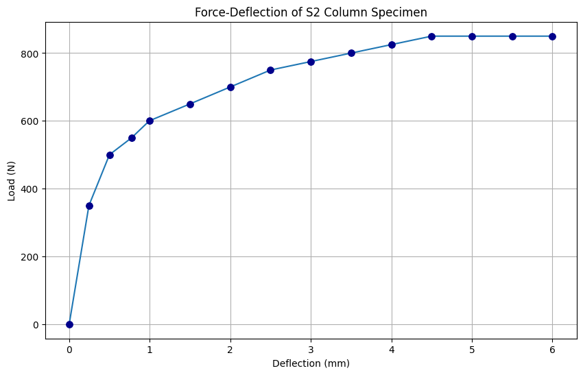

14 / Structural stability testing / Completed laboratory study
AE461 · Four-person laboratory team
Testing how supports, material, and eccentricity affect rod buckling
Our team tested slender rods in compression to investigate how mounting conditions, material stiffness, and load eccentricity affect structural stability. Force–deflection measurements provided a practical comparison with ideal Euler buckling predictions.
- Team contribution
- Co-authored the team’s buckling-test and Euler-theory comparison
- Tools
- Euler buckling · Force–deflection · Boundary conditions · Experimental mechanics
- Outcome
- Material trends followed Euler theory; imperfect restraints affected measured critical loads

Test the boundary conditions
The support comparison used similar steel specimens in pinned–pinned, fixed–pinned, and fixed–fixed arrangements. Theoretical critical loads were calculated using the corresponding effective buckling lengths.
Measured loads were 500 N, 950 N, and 710 N, compared with predictions of 548.56 N, 1116.75 N, and 2194.26 N. The first two followed the expected increase with restraint, but the fixed–fixed specimen did not. The report attributes this departure to imperfect clamping, alignment, and initial geometry.
Separate material and loading effects
For equal-geometry, pinned–pinned specimens, the measured buckling load increased from aluminum to brass to copper as Young’s modulus increased. This supported the expected stiffness dependence of Euler buckling.
In the eccentric-loading comparison, specimens began bending progressively rather than showing a sharp ideal buckling transition. Greater eccentricity was associated with lower maximum measured load and more gradual loss of stiffness.
Conclusion & contribution
The experiment demonstrated the usefulness of Euler theory while showing how real restraints and loading imperfections affect measured behavior. The fixed–fixed result is a documented exception to the ideal support trend, not evidence that every mounting case matched theory.
I coauthored the report with the laboratory team; the source does not assign individual ownership of the tests or calculations.
{kind=link}